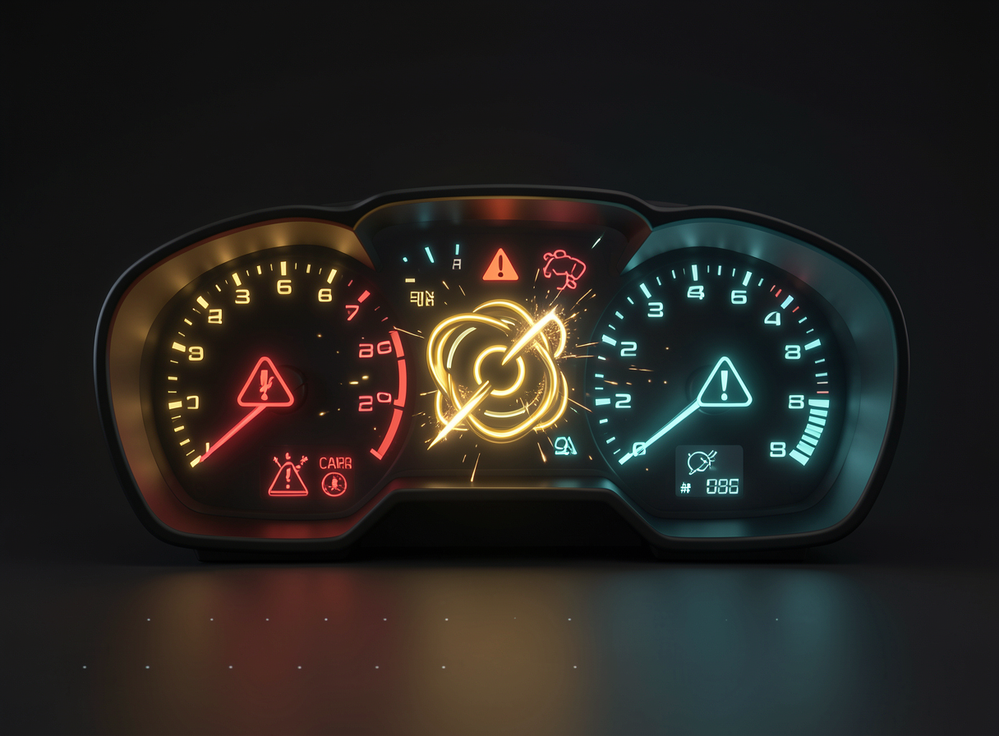

Qué ver: las señales de alerta de un loop mal armado. Cada luz roja aquí corresponde a uno de los ocho errores de abajo, y cada uno tiene una corrección sencilla. Lee este módulo como una lista de «qué no hacer».
❌ Sin paso de verificación
El error número uno, con diferencia: el agente actúa y nunca verifica. Edita, declara "listo" y sigue adelante, entregando trabajo roto con toda la confianza del mundo. Anthropic llama "verifica tu trabajo" al paso más subestimado de todos.
✗ El error
El loop hace el cambio y pasa directamente al siguiente. No ejecuta las pruebas ni vuelve a leer el objetivo. Resultado: pulido, seguro y incorrecto.
✓ La corrección
Coloca un checker explícito en cada vuelta: "después de cada cambio, ejecuta las pruebas y lee el resultado antes de continuar". Sin verificación, no hay loop: solo una conjetura repetida.
💡 Por qué este es el error de fondo
Casi todos los otros siete errores empeoran cuando falta verificación. Un objetivo vago duele menos si lo revisas; un loop sin parada es menos peligroso si detecta que terminó. La verificación es el sentido observa del bucle — quítala y el agente queda ciego.
🌫️ Objetivo vago
«Mejora el código». «Déjalo bien». Un objetivo vago no le da al loop ningún estado final — no hay una línea de llegada que se pueda comprobar. Sin saber cuándo se detuvo, el loop divaga: cambia cosas, las deshace, vuelve a cambiarlas, sin converger nunca.
✗ El error
- ✗«Mejora el código».
- ✗«Deja esto más limpio».
- ✗«Resuelve los problemas».
✓ La corrección
- ✓"Todas las pruebas en /tests pasan al ejecutar npm test."
- ✓«El build compila sin warnings».
- ✓«Menos de 50 palabras y menciona el precio».
♾️ Sin condición de parada
El principiante supone que el modelo se detiene por sí solo. No se detiene. Muchos loops populares, como el Ralph — ni siquiera tienen parada del lado del modelo: se ejecutan hasta que alguien aprieta el botón. Sin un hard stop, obtienes un comportamiento extraño o una cuenta de tokens absurda.
Lee el diagrama: a la izquierda, sin detenerse, el loop gira para siempre y quema tokens. A la derecha, el hard stop ("detente cuando pasen las pruebas o después de 10 intentos") garantiza una salida. Pon siempre un límite y observa en vivo la primera ejecución.
¿Quién es responsable de detener el loop?
🐘 Hacer demasiado por vuelta
«Corrige todo de una vez». Es tentador, y hace que el loop se debatir. Anthropic fue explícita: trabajar en una feature a la vez fue fundamental para que los agentes de larga duración convergieran. Un cambio por vuelta le da al checker algo pequeño y claro para evaluar.
✗ El error
«Corrige las 12 pruebas y refactoriza el módulo». El loop cambia diez cosas a la vez, una prueba nueva rompe otra y no logra aislar qué salió mal. Se vuelve una lucha consigo mismo.
✓ La corrección
«Corrige la prueba de primera falla. Verifica. Solo entonces pasa a lo siguiente." Un cambio → una verificación → repite. Lo pequeño y verificable converge; lo grande y ambiguo se desvía.
🧠 Por qué «uno a la vez» converge
Cuando cada vuelta cambia una sola cosa, la verificación aísla exactamente el efecto de ese cambio. El loop obtiene una señal clara: ¿mejoró o empeoró? Con diez cambios simultáneos, la señal se convierte en ruido y el loop pierde el rumbo.
⚠️ Herramientas peligrosas demasiado pronto
Dejar el primero que el loop haga merge, deploy o delete es una receta para un desastre irreversible. Al principio, el loop todavía comete errores, y un error con permisos de producción cuesta caro. Define el alcance de los permisos: el agente abre un PR y tú lo fusionas.
✗ El error
Darle al loop inicial el poder de git push --force, un deploy en producción o rm. Un paso en falso y el daño no se puede deshacer.
✓ La corrección
En la primera ejecución, permite solo editar archivos y ejecutar pruebas. Las acciones irreversibles quedan detrás de un gate humano: el loop abre el PR y tú lo apruebas.
💾 No guardar el estado
Un loop que funciona más allá de una ventana de contexto y no escribió nada en disco olvida lo que ya intentó — y repite los mismos callejones sin salida. La solución es sencilla: un archivo de progreso (PROGRESS.md) y commits frecuentes.
✗ El error
El loop intenta un enfoque, falla, se llena la context window, se pierde el registro de ese intento y el loop vuelve a intentar exactamente lo mismo. Da vueltas en círculos sin darse cuenta.
✓ La corrección
«Anota 1 línea en PROGRESS.md con cada cambio importante y haz commit». El loop vuelve a leer este archivo al comienzo de cada vuelta y retoma donde lo dejó: una memoria externa que sobrevive a la ventana.
🔀 Confundir los 2 sentidos de "loop"
La palabra "loop" tiene dos sentidos que se reemplazan constantemente. Uno es el loop de agente (la cognición reason→act→observe). El otro es human-in-the-loop (HITL): puertas que una persona debe aprobar antes de que el agente continúe. Son cosas distintas, y copiar una guía de HITL pensando que es un patrón de build te deja perdido.
🔁 Loop de agente
A cognición del agente: pensar → actuar → observar, repitiendo hasta que esté "listo". Es lo que diseñas cuando montas el bucle. Se trata de cómo razona el agente.
🙋 Human-in-the-loop
Un puerta de aprobación: la persona confirma antes de una acción sensible. Es supervisión, no la mente del agente. Es útil, pero no es un patrón para construir un bucle.
⚠️ La trampa en la práctica
Buscas "cómo construir un loop de agente", llegas a un tutorial de HITL lleno de la palabra "loop" y terminas con un flujo de aprobación, no con la cognición que querías. Comprueba siempre: la guía describe cómo piensa el agente (build) o cuando la persona aprueba (¿supervisión)?
🛋️ Rendición cognitiva
El último error es el más sutil. Addy Osmani lo llama rendición cognitiva: entregar el control total al loop y dejar de leer la salida. El loop es bueno, pero tú sigues siendo quien revisa, sobre todo al principio. La confianza ciega es la forma en que un bug llega a producción con una sonrisa.
✗ El error
Pones en marcha el loop, vas por un café, vuelves y haces merge sin leer. Funciona las primeras veces, hasta que un día "lo arregla" borrando la mitad de las pruebas y no te das cuenta.
✓ La corrección
Observa en vivo las primeras ejecuciones. Lee el diff antes de aprobarlo. Suelta las riendas poco a poco, solo cuando el bucle demuestre que lo merece; aun así, revisa de vez en cuando una muestra del resultado.
💡 Tú al mando, no en el asiento trasero
Un loop bien armado aumenta tu alcance; no sustituye tu criterio. El objetivo es delegar la ejecución repetitiva, manteniéndote como la persona revisora que define «listo» y echa un vistazo al resultado. La ingeniería de loops es exactamente esto: diseñar el sistema, no renunciar a él.
🧾 Resumen del módulo
Siguiente:
Ruta 4 — Loop Engineering: deja de escribir prompts y diseña loops.